本文介绍第二步到第六步。
针对refresh中的第4步，invokeBeanFactoryPostProcessors执行步骤：
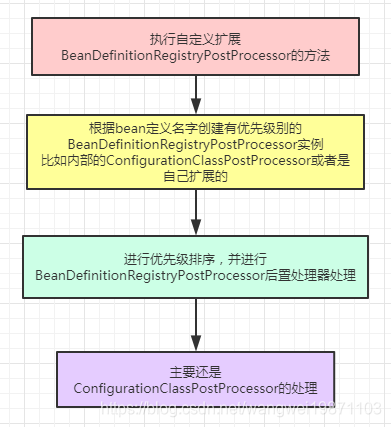
执行源码：
x1// PostProcessorRegistrationDelegate 中的方法2public static void invokeBeanFactoryPostProcessors(3 ConfigurableListableBeanFactory beanFactory, List<BeanFactoryPostProcessor> beanFactoryPostProcessors) {4
5 // ---看第二步---6 // Invoke BeanDefinitionRegistryPostProcessors first, if any.7 Set<String> processedBeans = new HashSet<>();8
9 if (beanFactory instanceof BeanDefinitionRegistry) {10 BeanDefinitionRegistry registry = (BeanDefinitionRegistry) beanFactory;11 List<BeanFactoryPostProcessor> regularPostProcessors = new ArrayList<>();12 List<BeanDefinitionRegistryPostProcessor> registryProcessors = new ArrayList<>();13 // ---end---14
15 // ---看第三步---16 for (BeanFactoryPostProcessor postProcessor : beanFactoryPostProcessors) {17 if (postProcessor instanceof BeanDefinitionRegistryPostProcessor) {18 BeanDefinitionRegistryPostProcessor registryProcessor =19 (BeanDefinitionRegistryPostProcessor) postProcessor;20 registryProcessor.postProcessBeanDefinitionRegistry(registry);21 registryProcessors.add(registryProcessor);22 }23 else {24 regularPostProcessors.add(postProcessor);25 }26 }27 // ---end---28
29 // ---看第四步---30 // Do not initialize FactoryBeans here: We need to leave all regular beans31 // uninitialized to let the bean factory post-processors apply to them!32 // Separate between BeanDefinitionRegistryPostProcessors that implement33 // PriorityOrdered, Ordered, and the rest.34 List<BeanDefinitionRegistryPostProcessor> currentRegistryProcessors = new ArrayList<>();35
36 // First, invoke the BeanDefinitionRegistryPostProcessors that implement PriorityOrdered.37 String[] postProcessorNames =38 beanFactory.getBeanNamesForType(BeanDefinitionRegistryPostProcessor.class, true, false);39 for (String ppName : postProcessorNames) {40 if (beanFactory.isTypeMatch(ppName, PriorityOrdered.class)) {41 currentRegistryProcessors.add(beanFactory.getBean(ppName, BeanDefinitionRegistryPostProcessor.class));42 processedBeans.add(ppName);43 }44 }45 // ---end---46 47 // ---看第五步---48 sortPostProcessors(currentRegistryProcessors, beanFactory);49 registryProcessors.addAll(currentRegistryProcessors);50 // ---end---51 52 // ---看第六步---53 invokeBeanDefinitionRegistryPostProcessors(currentRegistryProcessors, registry);54 // ---end---55 currentRegistryProcessors.clear();56
57 58 // 再次获取没处理过的BeanDefinitionRegistryPostProcessors且实现Ordered接口的来处理，59 // 因为可能前面处理后产生新的bean定义60 // Next, invoke the BeanDefinitionRegistryPostProcessors that implement Ordered.61 // 这个是个扩展点 ---第七步--- 自定义扩展62 postProcessorNames = beanFactory.getBeanNamesForType(BeanDefinitionRegistryPostProcessor.class, true, false);63 for (String ppName : postProcessorNames) {64 // 没处理过的，而且是Ordered类型的65 if (!processedBeans.contains(ppName) && beanFactory.isTypeMatch(ppName, Ordered.class)) {66 currentRegistryProcessors.add(beanFactory.getBean(ppName, BeanDefinitionRegistryPostProcessor.class));67 processedBeans.add(ppName);68 }69 }70 71 // ---看第五步---72 sortPostProcessors(currentRegistryProcessors, beanFactory);73 registryProcessors.addAll(currentRegistryProcessors);74 // ---end---75 76 // ---看第六步---77 invokeBeanDefinitionRegistryPostProcessors(currentRegistryProcessors, registry);78 // ---end---79 currentRegistryProcessors.clear();80
81 // 最后就处理剩下的那些后置处理器，比如自定义注册bean定义。82 // Finally, invoke all other BeanDefinitionRegistryPostProcessors until no further ones appear.83 boolean reiterate = true;84 while (reiterate) {85 reiterate = false;86 postProcessorNames = beanFactory.getBeanNamesForType(BeanDefinitionRegistryPostProcessor.class, true, false);87 for (String ppName : postProcessorNames) {88 if (!processedBeans.contains(ppName)) {89 currentRegistryProcessors.add(beanFactory.getBean(ppName, BeanDefinitionRegistryPostProcessor.class));90 processedBeans.add(ppName);91 reiterate = true;92 }93 }94 // ---看第五步---95 sortPostProcessors(currentRegistryProcessors, beanFactory);96 registryProcessors.addAll(currentRegistryProcessors);97 // ---end---98 99 // ---看第六步---100 invokeBeanDefinitionRegistryPostProcessors(currentRegistryProcessors, registry);101 // ---end---102 currentRegistryProcessors.clear();103 }104 105 // Now, invoke the postProcessBeanFactory callback of all processors handled so far.106 invokeBeanFactoryPostProcessors(registryProcessors, beanFactory);107 invokeBeanFactoryPostProcessors(regularPostProcessors, beanFactory);108 }109
110 else {111 // Invoke factory processors registered with the context instance.112 invokeBeanFactoryPostProcessors(beanFactoryPostProcessors, beanFactory);113 }114
115 // Do not initialize FactoryBeans here: We need to leave all regular beans116 // uninitialized to let the bean factory post-processors apply to them!117 String[] postProcessorNames =118 beanFactory.getBeanNamesForType(BeanFactoryPostProcessor.class, true, false);119
120 // Separate between BeanFactoryPostProcessors that implement PriorityOrdered,121 // Ordered, and the rest.122 List<BeanFactoryPostProcessor> priorityOrderedPostProcessors = new ArrayList<>();123 List<String> orderedPostProcessorNames = new ArrayList<>();124 List<String> nonOrderedPostProcessorNames = new ArrayList<>();125 for (String ppName : postProcessorNames) {126 if (processedBeans.contains(ppName)) {127 // skip - already processed in first phase above128 }129 else if (beanFactory.isTypeMatch(ppName, PriorityOrdered.class)) {130 priorityOrderedPostProcessors.add(beanFactory.getBean(ppName, BeanFactoryPostProcessor.class));131 }132 else if (beanFactory.isTypeMatch(ppName, Ordered.class)) {133 orderedPostProcessorNames.add(ppName);134 }135 else {136 nonOrderedPostProcessorNames.add(ppName);137 }138 }139
140 // First, invoke the BeanFactoryPostProcessors that implement PriorityOrdered.141 sortPostProcessors(priorityOrderedPostProcessors, beanFactory);142 invokeBeanFactoryPostProcessors(priorityOrderedPostProcessors, beanFactory);143
144 // Next, invoke the BeanFactoryPostProcessors that implement Ordered.145 List<BeanFactoryPostProcessor> orderedPostProcessors = new ArrayList<>();146 for (String postProcessorName : orderedPostProcessorNames) {147 orderedPostProcessors.add(beanFactory.getBean(postProcessorName, BeanFactoryPostProcessor.class));148 }149 sortPostProcessors(orderedPostProcessors, beanFactory);150 invokeBeanFactoryPostProcessors(orderedPostProcessors, beanFactory);151
152 // Finally, invoke all other BeanFactoryPostProcessors.153 List<BeanFactoryPostProcessor> nonOrderedPostProcessors = new ArrayList<>();154 for (String postProcessorName : nonOrderedPostProcessorNames) {155 nonOrderedPostProcessors.add(beanFactory.getBean(postProcessorName, BeanFactoryPostProcessor.class));156 }157 invokeBeanFactoryPostProcessors(nonOrderedPostProcessors, beanFactory);158
159 // Clear cached merged bean definitions since the post-processors might have160 // modified the original metadata, e.g. replacing placeholders in values...161 beanFactory.clearMetadataCache();162} 内部处理都是让PostProcessorRegistrationDelegate代理的。这个方法比较长，也比较复杂，我们可以分段来分析。首先会定义一个名字集合，表示处理过的处理器名字集合。
21//处理过的BeanDefinitionRegistryPostProcessors类型的bean名字集合2Set<String> processedBeans = new HashSet<>(); 首先会先定义两个处理器集合，一个是BeanFactoryPostProcessor类型的，一个是BeanDefinitionRegistryPostProcessor类型的。
41//BeanFactoryPostProcessor类型的2List<BeanFactoryPostProcessor> regularPostProcessors = new ArrayList<>();3//BeanDefinitionRegistryPostProcessor类型的4List<BeanDefinitionRegistryPostProcessor> registryProcessors = new ArrayList<>();其实这个两个是继承关系，我们来看看：
BeanFactoryPostProcessor接口：这个接口可以扩展，可以对beanFactory做处理，也就是在后置处理器最开始的时候，先处理自定义的处理器。
71public interface BeanFactoryPostProcessor {3
4 /** 可以操作beanFactory5 void postProcessBeanFactory(ConfigurableListableBeanFactory beanFactory) throws BeansException;6
7} BeanDefinitionRegistryPostProcessor接口：继承了BeanFactoryPostProcessor接口，增加了新方法，把注册器暴露出来了，更大的扩展。
61public interface BeanDefinitionRegistryPostProcessor extends BeanFactoryPostProcessor {2
3 //可以操作BeanDefinitionRegistry 4 void postProcessBeanDefinitionRegistry(BeanDefinitionRegistry registry) throws BeansException;5
6} 这里的beanFactoryPostProcessors是外面传进来的，默认是空的，除非你自己扩展了。
141//先处理BeanDefinitionRegistryPostProcessor，因为这里可以自定义扩展，增加bean定义2for (BeanFactoryPostProcessor postProcessor : beanFactoryPostProcessors) {3 //先处理自定义的BeanDefinitionRegistryPostProcessor4 if (postProcessor instanceof BeanDefinitionRegistryPostProcessor) {5 BeanDefinitionRegistryPostProcessor registryProcessor =6 (BeanDefinitionRegistryPostProcessor) postProcessor;7 //执行扩展方法8 registryProcessor.postProcessBeanDefinitionRegistry(registry);9 registryProcessors.add(registryProcessor);10 }11 else {12 regularPostProcessors.add(postProcessor);13 }14} 创建了一个后置处理器TestBeanDefinitionRegistryPostProcessor 实现了BeanDefinitionRegistryPostProcessor 接口。
111public class BeanDefinitionRegistryPostProcessorDemo implements BeanDefinitionRegistryPostProcessor {2 3 public void postProcessBeanDefinitionRegistry(BeanDefinitionRegistry registry) throws BeansException {4 System.out.println("MyBeanDefinitionRegistryPostProcessor postProcessBeanDefinitionRegistry");5 }6
7 8 public void postProcessBeanFactory(ConfigurableListableBeanFactory beanFactory) throws BeansException {9 System.out.println("MyBeanDefinitionRegistryPostProcessor postProcessBeanFactory");10 }11} 我们的测试就要这样写，需要在refresh之前把扩展的实例加进去addBeanFactoryPostProcessor。
71public void BeanDefinitionRegistryPostProcessorTest0() {3 AnnotationConfigApplicationContext applicationContext = new AnnotationConfigApplicationContext();4 applicationContext.register(MyConfig.class);5 applicationContext.addBeanFactoryPostProcessor(new TestBeanDefinitionRegistryPostProcessor());6 applicationContext.refresh();7}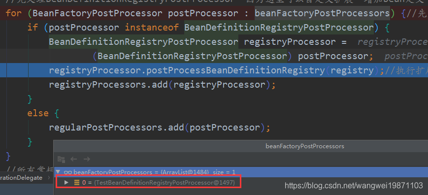
以看到会抵用这个方法，你可以进行扩展：
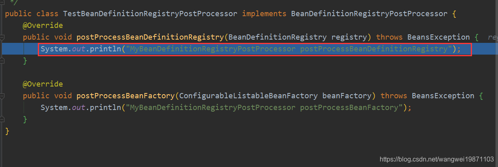
这个就是获取创建的时候添加的BeanDefinitionRegistryPostProcessor后置处理器，就是从Bean工厂的beanDefinitionNames里获取相应的名字，然后创建PriorityOrdered优先排序处理器，放入currentRegistryProcessors集合里。当名字放入最开始的processedBeans中，表示处理过了。
171//放内部的BeanDefinitionRegistryPostProcessor后置处理器2List<BeanDefinitionRegistryPostProcessor> currentRegistryProcessors = new ArrayList<>();3
4// ---看4-1步---5//获取BeanDefinitionRegistryPostProcessor类型对应的bean的名字6String[] postProcessorNames =7 beanFactory.getBeanNamesForType(BeanDefinitionRegistryPostProcessor.class, true, false);8// ---end---9
10//只处理PriorityOrdered类型的11for (String ppName : postProcessorNames) {12 if (beanFactory.isTypeMatch(ppName, PriorityOrdered.class)) {13 //先创建ConfigurationClassPostProcessor14 currentRegistryProcessors.add(beanFactory.getBean(ppName, BeanDefinitionRegistryPostProcessor.class));15 processedBeans.add(ppName);16 }17} 实际上开始就只执行到这里，调用doGetBeanNamesForType来返回。
61public String[] getBeanNamesForType( Class<?> type, boolean includeNonSingletons, boolean allowEagerInit) {3 if (!isConfigurationFrozen() || type == null || !allowEagerInit) {4 return doGetBeanNamesForType(ResolvableType.forRawClass(type), includeNonSingletons, allowEagerInit);5 }6... doGetBeanNamesForType，里面分两部分，一部分是从定义的bean名字列表中查找，另一部分是从预处理注册的单例中查找。具体里面很复杂，后面会详细讲。
这里如果没有扩展的话，就是获取org.springframework.context.annotation.internalConfigurationAnnotationProcessor，对应的类就是ConfigurationClassPostProcessor。
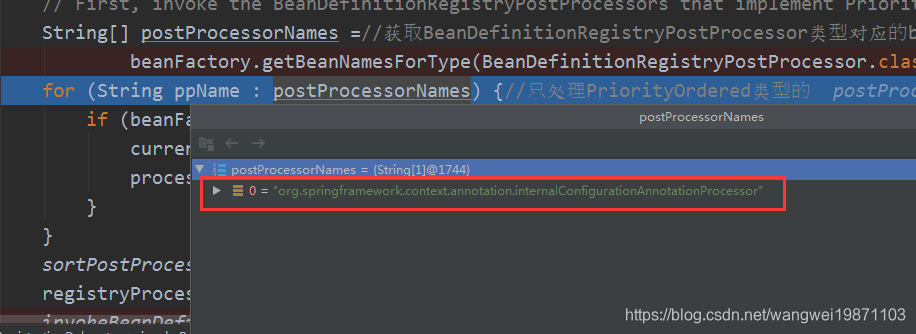
这里是可以扩展的：直接在registry中添加bean定义，把BeanDefinitionRegistryPostProcessor和PriorityOrdered接口的类型注册进去，在最开始的地方就可以把自己定义的TestBeanDefinitionRegistryPostProcessorPriorityOrdered类注册进去：
121public class TestBeanDefinitionRegistryPostProcessor implements BeanDefinitionRegistryPostProcessor {2 3 public void postProcessBeanDefinitionRegistry(BeanDefinitionRegistry registry) throws BeansException {4 System.out.println("MyBeanDefinitionRegistryPostProcessor postProcessBeanDefinitionRegistry");5 registry.registerBeanDefinition("mytest",new AnnotatedGenericBeanDefinition(TestBeanDefinitionRegistryPostProcessorPriorityOrdered.class));6 }7
8 9 public void postProcessBeanFactory(ConfigurableListableBeanFactory beanFactory) throws BeansException {10 System.out.println("MyBeanDefinitionRegistryPostProcessor postProcessBeanFactory");11 }12} TestBeanDefinitionRegistryPostProcessorPriorityOrdered，实现了BeanDefinitionRegistryPostProcessor和PriorityOrdered 接口。
201public class TestBeanDefinitionRegistryPostProcessorPriorityOrdered implements BeanDefinitionRegistryPostProcessor, PriorityOrdered {2 public TestBeanDefinitionRegistryPostProcessorPriorityOrdered(){3 System.out.println("TestBeanDefinitionRegistryPostProcessorPriorityOrdered被创建了");4 }5
6 7 public void postProcessBeanDefinitionRegistry(BeanDefinitionRegistry registry) throws BeansException {8 System.out.println("MyBeanDefinitionRegistryPostProcessorPriorityOrdered postProcessBeanDefinitionRegistry");9 }10
11 12 public void postProcessBeanFactory(ConfigurableListableBeanFactory beanFactory) throws BeansException {13 System.out.println("MyBeanDefinitionRegistryPostProcessorPriorityOrdered postProcessBeanFactory");14 }15 //排序的值，越小越前面16 17 public int getOrder() {18 return 1;19 }20}可以看到我们自己注册的也获取了。
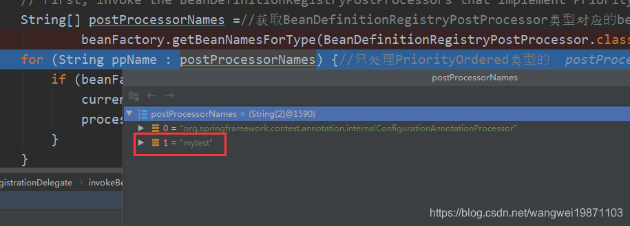
然后被创建出来了，我们扩展的类和内部的后置处理器一起创建了：
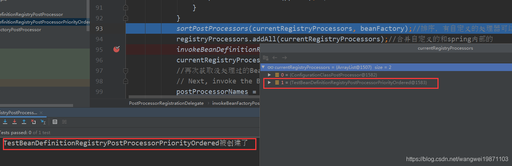
前面已经将BeanDefinitionRegistryPostProcessor类型优先（PriorityOrdered）创建出来了，里面能自己扩展，然后在进行排序，内部的ConfigurationClassPostProcessor默认是优先级最低的Ordered.LOWEST_PRECEDENCE。
51//排序，有自定义的处理器可以控制执行顺序2sortPostProcessors(currentRegistryProcessors, beanFactory);3
4//合并自定义的和spring内部的5registryProcessors.addAll(currentRegistryProcessors); 这里还会进行已注册的处理器的合并，一个是我们自己创建添加进去的，一个是扩展方法注册bean定义进去的：
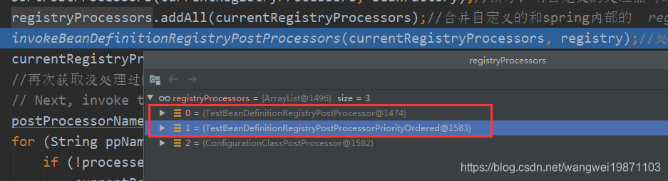
invokeBeanDefinitionRegistryPostProcessors，遍历所有的进行处理。
101private static void invokeBeanDefinitionRegistryPostProcessors(2 Collection<? extends BeanDefinitionRegistryPostProcessor> postProcessors, BeanDefinitionRegistry registry) {3
4 for (BeanDefinitionRegistryPostProcessor postProcessor : postProcessors) {5 // ---看6-1步---6 // 调用各种 处理器 调用ConfigurationClassPostProcessor的处理方法7 postProcessor.postProcessBeanDefinitionRegistry(registry);8 // ---end---9 }10}当然也包括我们刚才的扩展的，而且我们扩展的优先级最高，已经被排到前面了：
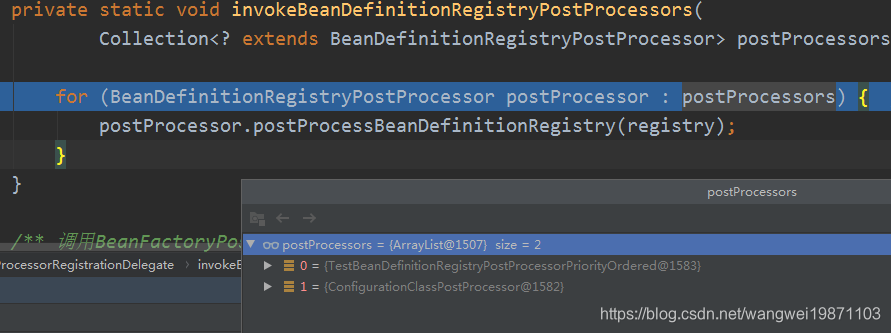
调用了处理方法，只是打个信息。
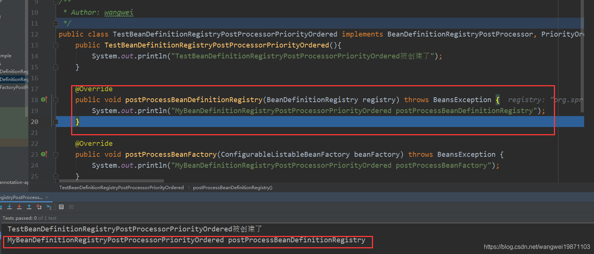
大致处理流程是：
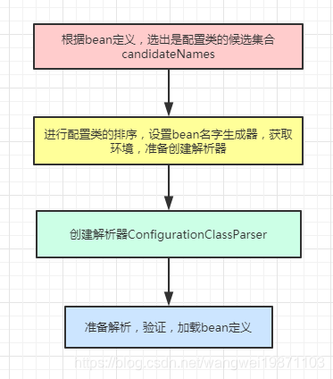
先检测是否已经处理过，再调用processConfigBeanDefinitions处理。
211public void postProcessBeanDefinitionRegistry(BeanDefinitionRegistry registry) {3 int registryId = System.identityHashCode(registry);4 if (this.registriesPostProcessed.contains(registryId)) {5 throw new IllegalStateException(6 "postProcessBeanDefinitionRegistry already called on this post-processor against " + registry);7 }8 9 if (this.factoriesPostProcessed.contains(registryId)) {10 throw new IllegalStateException(11 "postProcessBeanFactory already called on this post-processor against " + registry);12 }13 14 //先添加表示处理了15 this.registriesPostProcessed.add(registryId);16
17 // ---看6-1.1步---18 // 开始处理 19 processConfigBeanDefinitions(registry);20 // ---end---21}首先选出配置类的bean定义
取出所有的bean定义名字，遍历获取bean定义，然后判断是否有配置属性CONFIGURATION_CLASS_ATTRIBUTE，没有的话就检查是否是配置类，有的话就封装成BeanDefinitionHolder添加到configCandidates中。
1201public void processConfigBeanDefinitions(BeanDefinitionRegistry registry) {2 List<BeanDefinitionHolder> configCandidates = new ArrayList<>();3 // 获取所有bean定义名字4 String[] candidateNames = registry.getBeanDefinitionNames();5
6 for (String beanName : candidateNames) {7 BeanDefinition beanDef = registry.getBeanDefinition(beanName);8 9 // 如果有这个属性表示处理过了10 if (ConfigurationClassUtils.isFullConfigurationClass(beanDef) ||11 ConfigurationClassUtils.isLiteConfigurationClass(beanDef)) {12 if (logger.isDebugEnabled()) {13 logger.debug("Bean definition has already been processed as a configuration class: " + beanDef);14 }15 }16 17 // ---6-1.2步---18 //把Configuration注解的bean 定义到configCandidates 19 else if (ConfigurationClassUtils.checkConfigurationClassCandidate(beanDef, this.metadataReaderFactory)) {20 configCandidates.add(new BeanDefinitionHolder(beanDef, beanName));21 }22 // ---end---23 }24
25 //没有配置候选就返回26 // Return immediately if no @Configuration classes were found27 if (configCandidates.isEmpty()) {28 return;29 }30
31 //---看6-1.3步---32 // 排序，设置bean名字生成器，获取环境 33 // Sort by previously determined @Order value, if applicable34 configCandidates.sort((bd1, bd2) -> {35 int i1 = ConfigurationClassUtils.getOrder(bd1.getBeanDefinition());36 int i2 = ConfigurationClassUtils.getOrder(bd2.getBeanDefinition());37 return Integer.compare(i1, i2);38 });39
40 // Detect any custom bean name generation strategy supplied through the enclosing application context41 SingletonBeanRegistry sbr = null;42 if (registry instanceof SingletonBeanRegistry) {43 sbr = (SingletonBeanRegistry) registry;44 if (!this.localBeanNameGeneratorSet) {45 BeanNameGenerator generator = (BeanNameGenerator) sbr.getSingleton(CONFIGURATION_BEAN_NAME_GENERATOR);46 if (generator != null) {47 this.componentScanBeanNameGenerator = generator;48 this.importBeanNameGenerator = generator;49 }50 }51 }52
53 if (this.environment == null) {54 this.environment = new StandardEnvironment();55 }56 // ---end---57 58 // ---看6-1.4步--- 59 // 创建配置类解析器，开始解析60 // Parse each @Configuration class61 ConfigurationClassParser parser = new ConfigurationClassParser(62 this.metadataReaderFactory, this.problemReporter, this.environment,63 this.resourceLoader, this.componentScanBeanNameGenerator, registry);64
65 Set<BeanDefinitionHolder> candidates = new LinkedHashSet<>(configCandidates);66 Set<ConfigurationClass> alreadyParsed = new HashSet<>(configCandidates.size());67 do {68 parser.parse(candidates);69 parser.validate();70
71 Set<ConfigurationClass> configClasses = new LinkedHashSet<>(parser.getConfigurationClasses());72 configClasses.removeAll(alreadyParsed);73
74 // Read the model and create bean definitions based on its content75 if (this.reader == null) {76 this.reader = new ConfigurationClassBeanDefinitionReader(77 registry, this.sourceExtractor, this.resourceLoader, this.environment,78 this.importBeanNameGenerator, parser.getImportRegistry());79 }80 this.reader.loadBeanDefinitions(configClasses);81 alreadyParsed.addAll(configClasses);82
83 candidates.clear();84 if (registry.getBeanDefinitionCount() > candidateNames.length) {85 String[] newCandidateNames = registry.getBeanDefinitionNames();86 Set<String> oldCandidateNames = new HashSet<>(Arrays.asList(candidateNames));87 Set<String> alreadyParsedClasses = new HashSet<>();88 for (ConfigurationClass configurationClass : alreadyParsed) {89 alreadyParsedClasses.add(configurationClass.getMetadata().getClassName());90 }91 for (String candidateName : newCandidateNames) {92 if (!oldCandidateNames.contains(candidateName)) {93 BeanDefinition bd = registry.getBeanDefinition(candidateName);94 if (ConfigurationClassUtils.checkConfigurationClassCandidate(bd, this.metadataReaderFactory) &&95 !alreadyParsedClasses.contains(bd.getBeanClassName())) {96 candidates.add(new BeanDefinitionHolder(bd, candidateName));97 }98 }99 }100 candidateNames = newCandidateNames;101 }102 }103 while (!candidates.isEmpty());104 // ---end---105 106 107 // 把importStack注册为单例，为了支持ImportAware接口扩展，说明已经处理Import注解过了。108 // Register the ImportRegistry as a bean in order to support ImportAware @Configuration classes109 if (sbr != null && !sbr.containsSingleton(IMPORT_REGISTRY_BEAN_NAME)) {110 sbr.registerSingleton(IMPORT_REGISTRY_BEAN_NAME, parser.getImportRegistry());111 }112
113 // 清除字节码元数据缓存114 // 有些bean定义的元数据是通过URL加载字节码文件解析来的，为了避免每次都去IO操作，会有元数据的缓存，现在处理完了就要把缓存清除了。115 if (this.metadataReaderFactory instanceof CachingMetadataReaderFactory) {116 // Clear cache in externally provided MetadataReaderFactory; this is a no-op117 // for a shared cache since it'll be cleared by the ApplicationContext.118 ((CachingMetadataReaderFactory) this.metadataReaderFactory).clearCache();119 }120 } 把贴了@Configuration的bean 定义到configCandidates。
别看代码很长，其实就是先获取bean的全限定名，然后判断是否是注解类型，是的话就取出注解元数据，不是就判断是否存在BeanClass，是的话就取他的元数据，不是就用url去加载类名对应的类，取出元数据。然后获取元数据上的Configuration注解的属性，默认proxyBeanMethods=true，后面会使用CGLIB动态代理增强，所以要设置一个full的属性，否则就设置lite属性。最后如果设置了Order注解，就设置序号属性。
771// ConfigurationClassUtils中的方法2public static boolean checkConfigurationClassCandidate( 3 BeanDefinition beanDef, MetadataReaderFactory metadataReaderFactory) {4 5 //获取Bean全限定名6 String className = beanDef.getBeanClassName();7 if (className == null || beanDef.getFactoryMethodName() != null) {8 return false;9 }10
11 AnnotationMetadata metadata;12 13 //是注解类型，元数据类名跟bean类名一样14 if (beanDef instanceof AnnotatedBeanDefinition &&15 className.equals(((AnnotatedBeanDefinition) beanDef).getMetadata().getClassName())) {16 // Can reuse the pre-parsed metadata from the given BeanDefinition...17 metadata = ((AnnotatedBeanDefinition) beanDef).getMetadata();//获得注解的元数据18 }19 20 // 是否存在BeanClass21 else if (beanDef instanceof AbstractBeanDefinition && ((AbstractBeanDefinition) beanDef).hasBeanClass()) {22 23 // Check already loaded Class if present...存在BeanClass就取出来24 // since we possibly can't even load the class file for this Class.25 Class<?> beanClass = ((AbstractBeanDefinition) beanDef).getBeanClass();26 if (BeanFactoryPostProcessor.class.isAssignableFrom(beanClass) ||27 BeanPostProcessor.class.isAssignableFrom(beanClass) ||28 AopInfrastructureBean.class.isAssignableFrom(beanClass) ||29 EventListenerFactory.class.isAssignableFrom(beanClass)) {30 return false;31 }32 //取出元数据33 metadata = AnnotationMetadata.introspect(beanClass);34 }35 36 // 不是 使用url加载对应的类37 else {38 try {39 MetadataReader metadataReader = metadataReaderFactory.getMetadataReader(className);40 metadata = metadataReader.getAnnotationMetadata();41 }42 catch (IOException ex) {43 if (logger.isDebugEnabled()) {44 logger.debug("Could not find class file for introspecting configuration annotations: " +45 className, ex);46 }47 return false;48 }49 }50 51 // 获取Configuration注解的属性52 Map<String, Object> config = metadata.getAnnotationAttributes(Configuration.class.getName());53 // 如果proxyBeanMethods=true，可能会用动态代理54 if (config != null && !Boolean.FALSE.equals(config.get("proxyBeanMethods"))) {55 //设置属性为full （Spring full模式）56 beanDef.setAttribute(CONFIGURATION_CLASS_ATTRIBUTE, CONFIGURATION_CLASS_FULL);57 }58 59 // ---看6-1.2.1步---60 // 是配置候选类设置属性为lite （Spring lite模式） 61 else if (config != null || isConfigurationCandidate(metadata)) {62 beanDef.setAttribute(CONFIGURATION_CLASS_ATTRIBUTE, CONFIGURATION_CLASS_LITE);63 }64 // ---end---65 else {66 return false;67 }68
69 // It's a full or lite configuration candidate... Let's determine the order value, if any.70 Integer order = getOrder(metadata);71 //如果有排序，设置序号属性72 if (order != null) {73 beanDef.setAttribute(ORDER_ATTRIBUTE, order);74 }75
76 return true;77}最后执行完就只有一个配置类：
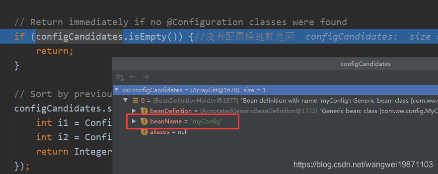
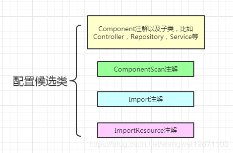
我们知道加了Configuration注解肯定是配置类，但是不加其实也可以是配置类，只要不是接口类型，有Component ComponentScan Import ImportResource任意一个注解，或者有bean注解的方法。只是加了Configuration注解后，里面有个默认proxyBeanMethods=true的属性，可以使用动态代理做增强的，具体用法后面会总结。我们看这个是否是配置候选类的方法：
371//是配置候选类型的集合2private static final Set<String> candidateIndicators = new HashSet<>(8);3
4//添加配置类型的集合Component ComponentScan Import ImportResource5static {6 candidateIndicators.add(Component.class.getName());7 candidateIndicators.add(ComponentScan.class.getName());8 candidateIndicators.add(Import.class.getName());9 candidateIndicators.add(ImportResource.class.getName());10}11
12public static boolean isConfigurationCandidate(AnnotationMetadata metadata) {13 // Do not consider an interface or an annotation...14 //接口就不是15 if (metadata.isInterface()) {16 return false;17 }18
19 // Any of the typical annotations found?20 // 存在 Component ComponentScan Import ImportResource任意一个注解21 for (String indicator : candidateIndicators) {22 if (metadata.isAnnotated(indicator)) {23 return true;24 }25 }26
27 // Finally, let's look for @Bean methods...28 //或者bean方法注解29 try {30 return metadata.hasAnnotatedMethods(Bean.class.getName());31 } catch (Throwable ex) {32 if (logger.isDebugEnabled()) {33 logger.debug("Failed to introspect @Bean methods on class [" + metadata.getClassName() + "]: " + ex);34 }35 return false;36 }37} 这里就是把上面的configCandidates进行排序，然后设置bean名字生成器，一般就是默认的，然后获取环境。
261 configCandidates.sort((bd1, bd2) -> {2 int i1 = ConfigurationClassUtils.getOrder(bd1.getBeanDefinition());3 int i2 = ConfigurationClassUtils.getOrder(bd2.getBeanDefinition());4 return Integer.compare(i1, i2);5 });6
7 //检测是否有自定义的bean name生成器8 // Detect any custom bean name generation strategy supplied through the enclosing application context9 SingletonBeanRegistry sbr = null;10 if (registry instanceof SingletonBeanRegistry) {11 sbr = (SingletonBeanRegistry) registry;12 if (!this.localBeanNameGeneratorSet) {13 BeanNameGenerator generator = (BeanNameGenerator) sbr.getSingleton(14 AnnotationConfigUtils.CONFIGURATION_BEAN_NAME_GENERATOR);15 16 //如果有自定义的beanname生成器，就是何止进去17 if (generator != null) {18 this.componentScanBeanNameGenerator = generator;19 this.importBeanNameGenerator = generator;20 }21 }22 }23
24 if (this.environment == null) {25 this.environment = new StandardEnvironment();26 } 创建解析器，将配置类集合转成LinkedHashSet，并创建一个已经解析成ConfigurationClass类型的HashSet表示已经解析好的配置类。然后开始解析，解析完后会进行验证，因为里面可能会进行CGLIB的动态代理，具体后面会讲，然后将解析好的ConfigurationClass集合返回，删除上一次已经解析过的，留下的就是新解析出来的，然后对解析出来的ConfigurationClass集合进行bean定义的加载，因为前面解析的时候可能会有@import，@bean等属性，会有新的bean定义。处理完就放入已解析过的集合alreadyParsed 中，然后清空，判断加载后的bean定义的数量是否有增加，有的话说明就有新的bean定义了，又要重新去判断是否是配置类，是的话就放到candidates中，然后继续解析，一直循环知道没有配置类为止。
691// Parse each @Configuration class 创建配置解析器2ConfigurationClassParser parser = new ConfigurationClassParser(3 this.metadataReaderFactory, this.problemReporter, this.environment,4 this.resourceLoader, this.componentScanBeanNameGenerator, registry);5
6//转成LinkedHashSet7Set<BeanDefinitionHolder> candidates = new LinkedHashSet<>(configCandidates);8//已经解析过的9Set<ConfigurationClass> alreadyParsed = new HashSet<>(configCandidates.size());10
11//开始解析configCandidates元素12do {13 //解析配置类集合 看 <<06.ConfigurationClassParser的parse方法>>文章14 parser.parse(candidates);15 16 //---看6-1.4.1步---17 //验证如果要CGLIB代理的话，条件是否满足，比如类不能final，bean注解方法要可覆盖18 parser.validate();19 // ---end--- 20
21 //获得解析好的ConfigurationClass22 Set<ConfigurationClass> configClasses = new LinkedHashSet<>(parser.getConfigurationClasses());23 //删除已经解析的24 configClasses.removeAll(alreadyParsed);25 26 // Read the model and create bean definitions based on its content27 if (this.reader == null) {28 //创建配置类bean定义读取器29 this.reader = new ConfigurationClassBeanDefinitionReader(30 registry, this.sourceExtractor, this.resourceLoader, this.environment,31 this.importBeanNameGenerator, parser.getImportRegistry());32 }33
34 // ---看6-1.4.4步---35 //加载bean定义36 this.reader.loadBeanDefinitions(configClasses);37 //---end---38 39 //添加到已处理的集合40 alreadyParsed.addAll(configClasses);41
42 //处理完一次就清空43 candidates.clear();44 //如果有加载到新的bean定义，再继续加载45 if (registry.getBeanDefinitionCount() > candidateNames.length) {46 //总的名字47 String[] newCandidateNames = registry.getBeanDefinitionNames();48 //处理过的名字49 Set<String> oldCandidateNames = new HashSet<>(Arrays.asList(candidateNames));50 Set<String> alreadyParsedClasses = new HashSet<>();51 for (ConfigurationClass configurationClass : alreadyParsed) {52 alreadyParsedClasses.add(configurationClass.getMetadata().getClassName());53 }54 for (String candidateName : newCandidateNames) {55 //处理新的56 if (!oldCandidateNames.contains(candidateName)) {57 BeanDefinition bd = registry.getBeanDefinition(candidateName);58 if (ConfigurationClassUtils.checkConfigurationClassCandidate(bd, this.metadataReaderFactory) &&59 //符合配置类要求就添加到candidates60 !alreadyParsedClasses.contains(bd.getBeanClassName())) {61 candidates.add(new BeanDefinitionHolder(bd, candidateName));62 }63 }64 }65 //更新候选名字66 candidateNames = newCandidateNames;67 }68}69while (!candidates.isEmpty()); 其实就是一个解析配置类的过程，然后解析之后会发现可能配置类里面还会带有其他配置类的定义，然后就得循环去解析新的配置类，直到最后没有新的配置类的bean定义。
因为这里涉及到一个CGLIB动态代理的条件问题，GCLIB的代理原理是继承目标类，覆盖相应的方法，可能还有一些方法拦截器，所以对类和方法是有要求的。
所以他会进行配置类的遍历验证。
81public void validate() {2 // 获取所有的config3 for (ConfigurationClass configClass : this.configurationClasses.keySet()) {4 // ---看6-1.4.2步---5 configClass.validate(this.problemReporter);6 // ---end---7 }8} 具体验证是交给ConfigurationClass自身方法的。这里就是我们所说的Configuration注解的重要作用，可以进行类代理的增强。如果是Configuration注解的，默认proxyBeanMethods=true，后面就会进行GCLIB代理增强。
所以这里要验证下元数据里有没有final修饰类，因为final修饰类是不可以被继承的，同时还要验证下所有的bean方法是可以被覆盖的。
191//进行验证，如果是proxyBeanMethods=true，默认用GCLIB做代理，是继承的，所以不可以是final类2public void validate(ProblemReporter problemReporter) {3 4 // A configuration class may not be final (CGLIB limitation) unless it declares proxyBeanMethods=false5 Map<String, Object> attributes = this.metadata.getAnnotationAttributes(Configuration.class.getName());6 //要GCLIB代理7 if (attributes != null && (Boolean) attributes.get("proxyBeanMethods")) {8 //配置类不可以是final的9 if (this.metadata.isFinal()) {10 problemReporter.error(new FinalConfigurationProblem());11 }12 for (BeanMethod beanMethod : this.beanMethods) {13 // ---看6-1.4.3步---14 //验证方法可覆盖15 beanMethod.validate(problemReporter);16 // ---end---17 }18 }19} 这里就是验证bean注解的方法，如果是静态的，就没关系，立即返回，否则的话要判断是否可以覆盖。
211public void validate(ProblemReporter problemReporter) {3 //静态方法属于类的，不管4 if (getMetadata().isStatic()) {5 // static @Bean methods have no constraints to validate -> return immediately6 return;7 }8
9 if (this.configurationClass.getMetadata().isAnnotated(Configuration.class.getName())) {10 //不能覆盖的话，也报错，因为不能GCLIB覆盖啦11 if (!getMetadata().isOverridable()) {12 // instance @Bean methods within @Configuration classes must be overridable to accommodate CGLIB13 problemReporter.error(new NonOverridableMethodError());14 }15 }16}17//可以覆盖的条件，非静态且非final且不是私有的18public boolean isOverridable() {20 return !isStatic() && !isFinal() && !isPrivate();21}加载配置类的BeanDefinition。
171//获得解析好的ConfigurationClass2Set<ConfigurationClass> configClasses = new LinkedHashSet<>(parser.getConfigurationClasses());3//删除已经解析的4configClasses.removeAll(alreadyParsed);5
6// Read the model and create bean definitions based on its content7if (this.reader == null) {8//创建配置类bean定义读取器9this.reader = new ConfigurationClassBeanDefinitionReader(10 registry, this.sourceExtractor, this.resourceLoader, this.environment,11 this.importBeanNameGenerator, parser.getImportRegistry());12}13
14// ---看6-1.4.5步---15//加载bean定义16this.reader.loadBeanDefinitions(configClasses);17// ---end---加载流程：
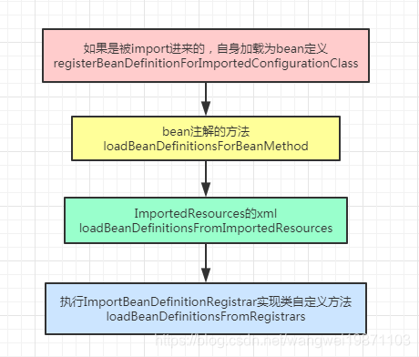
前面我们把配置类解析好了，放进ConfigurationClass集合里，但是还没有进行bean定义，所以后面就是进行bean定义了，遍历所有的ConfigurationClass，加载bean定义。
81public void loadBeanDefinitions(Set<ConfigurationClass> configurationModel) {2 TrackedConditionEvaluator trackedConditionEvaluator = new TrackedConditionEvaluator();3 for (ConfigurationClass configClass : configurationModel) {4 // ---看6-1.4.6步--- 加载5 loadBeanDefinitionsForConfigurationClass(configClass, trackedConditionEvaluator);6 // ---end---7 }8} 从ConfigurationClass中获取bean名字，如果发现是条件过滤的且注册器里有相关bean定义，就要删除。然后处理是否是被import进来的，处理bean注解方法的，处理ImportedResources和ImportBeanDefinitionRegistrar接口实现类的。
381private void loadBeanDefinitionsForConfigurationClass(2 ConfigurationClass configClass, TrackedConditionEvaluator trackedConditionEvaluator) {3
4 if (trackedConditionEvaluator.shouldSkip(configClass)) {5 // 获取BeanName6 String beanName = configClass.getBeanName();7 8 // 如果已经注册 就需要先删除9 if (StringUtils.hasLength(beanName) && this.registry.containsBeanDefinition(beanName)) {10 this.registry.removeBeanDefinition(beanName);11 }12 this.importRegistry.removeImportingClass(configClass.getMetadata().getClassName());13 return;14 }15
16 //是被import进来的17 if (configClass.isImported()) {18 // ---看6-1.4.7步---19 registerBeanDefinitionForImportedConfigurationClass(configClass);20 // ---end---21 }22 //处理bean注解方法23 for (BeanMethod beanMethod : configClass.getBeanMethods()) {24 // ---看6-1.4.8步---25 loadBeanDefinitionsForBeanMethod(beanMethod);26 // ---end---27 }28
29 // ---看6-1.4.9步---30 //从ImportedResources加载bean定义31 loadBeanDefinitionsFromImportedResources(configClass.getImportedResources());32 // ---end--- 33 34 // ---看6-1.4.10步---35 //从Registrars接口加载bean定义36 loadBeanDefinitionsFromRegistrars(configClass.getImportBeanDefinitionRegistrars());37 // ---end--- 38} 如果是被import进来的，直接将自己就封装成AnnotatedGenericBeanDefinition ，注册到注册器registry中。
211// 封装成AnnotatedGenericBeanDefinition 注册到registry中2private void registerBeanDefinitionForImportedConfigurationClass(ConfigurationClass configClass) {3 AnnotationMetadata metadata = configClass.getMetadata();4 AnnotatedGenericBeanDefinition configBeanDef = new AnnotatedGenericBeanDefinition(metadata);5
6 // 封装作用域7 ScopeMetadata scopeMetadata = scopeMetadataResolver.resolveScopeMetadata(configBeanDef);8 configBeanDef.setScope(scopeMetadata.getScopeName());9 10 String configBeanName = this.importBeanNameGenerator.generateBeanName(configBeanDef, this.registry);11 AnnotationConfigUtils.processCommonDefinitionAnnotations(configBeanDef, metadata);12
13 BeanDefinitionHolder definitionHolder = new BeanDefinitionHolder(configBeanDef, configBeanName);14 definitionHolder = AnnotationConfigUtils.applyScopedProxyMode(scopeMetadata, definitionHolder, this.registry);15 this.registry.registerBeanDefinition(definitionHolder.getBeanName(), definitionHolder.getBeanDefinition());16 configClass.setBeanName(configBeanName);17
18 if (logger.isTraceEnabled()) {19 logger.trace("Registered bean definition for imported class '" + configBeanName + "'");20 }21 } 看起来这个方法好像很长，其实就是将bean注解的方法元数据取出来分析，分析bean注解，有没有别名，有没有跟xml配置冲突啊，封装成一个ConfigurationClassBeanDefinition，然后设置工厂方法名，获取bean注解的属性，设置初始化方法，销毁方法，是否自动装配，是否需要代理，是JDK动态代理，还是CGLIB动态代理，如果用了动态代理，除了目标bean定义会注册以外，代理bean也会被注册。
1181private void loadBeanDefinitionsForBeanMethod(BeanMethod beanMethod) {2 ConfigurationClass configClass = beanMethod.getConfigurationClass();3 //方法元数据4 MethodMetadata metadata = beanMethod.getMetadata();5 String methodName = metadata.getMethodName();6
7 // Do we need to mark the bean as skipped by its condition?8 if (this.conditionEvaluator.shouldSkip(metadata, ConfigurationPhase.REGISTER_BEAN)) {9 configClass.skippedBeanMethods.add(methodName);10 return;11 }12 if (configClass.skippedBeanMethods.contains(methodName)) {13 return;14 }15 //获取bean注解的属性16 AnnotationAttributes bean = AnnotationConfigUtils.attributesFor(metadata, Bean.class);17 Assert.state(bean != null, "No @Bean annotation attributes");18
19 // Consider name and any aliases获取别名20 List<String> names = new ArrayList<>(Arrays.asList(bean.getStringArray("name")));21 String beanName = (!names.isEmpty() ? names.remove(0) : methodName);//获取第一个别名,没有别名就用方法名22
23 //注册剩下的别名24 // Register aliases even when overridden25 for (String alias : names) {26 this.registry.registerAlias(beanName, alias);27 }28 //是否存在同名bean定义就不处理了，比如处理器扩展的，XML定义的29 // Has this effectively been overridden before (e.g. via XML)?30 if (isOverriddenByExistingDefinition(beanMethod, beanName)) {31 if (beanName.equals(beanMethod.getConfigurationClass().getBeanName())) {32 throw new BeanDefinitionStoreException(beanMethod.getConfigurationClass().getResource().getDescription(),33 beanName, "Bean name derived from @Bean method '" + beanMethod.getMetadata().getMethodName() +34 "' clashes with bean name for containing configuration class; please make those names unique!");35 }36 return;37 }38 //封装为ConfigurationClassBeanDefinition，表示是来自配置类里的bean定义39 ConfigurationClassBeanDefinition beanDef = new ConfigurationClassBeanDefinition(configClass, metadata);40 //设置来源的类41 beanDef.setResource(configClass.getResource());42 //设置元数据43 beanDef.setSource(this.sourceExtractor.extractSource(metadata, configClass.getResource()));44
45 //静态的，设置BeanClass46 if (metadata.isStatic()) {47 // static @Bean method48 if (configClass.getMetadata() instanceof StandardAnnotationMetadata) {49 beanDef.setBeanClass(((StandardAnnotationMetadata) configClass.getMetadata()).getIntrospectedClass());50 }51 else {52 beanDef.setBeanClassName(configClass.getMetadata().getClassName());//设置配置类全限定名53 }54 beanDef.setUniqueFactoryMethodName(methodName);55 }56 else {57 // instance @Bean method 实例的，设置工厂名，也就是配置类名58 beanDef.setFactoryBeanName(configClass.getBeanName());59 //设置工厂方法的名字，也就是方法名60 beanDef.setUniqueFactoryMethodName(methodName);61 }62 //如果方法元数据是标准方法元数据的话，就设置解析的工厂方法63 if (metadata instanceof StandardMethodMetadata) {64 beanDef.setResolvedFactoryMethod(((StandardMethodMetadata) metadata).getIntrospectedMethod());65 }66 //设置自定装配模式默认是构造器67 beanDef.setAutowireMode(AbstractBeanDefinition.AUTOWIRE_CONSTRUCTOR);68 beanDef.setAttribute(org.springframework.beans.factory.annotation.RequiredAnnotationBeanPostProcessor.69 SKIP_REQUIRED_CHECK_ATTRIBUTE, Boolean.TRUE);//设置略过属性检查70 //处理通用注解，注解里可能还有自动装配注解等71 AnnotationConfigUtils.processCommonDefinitionAnnotations(beanDef, metadata);72 //获取自动装配枚举信息73 Autowire autowire = bean.getEnum("autowire");74 if (autowire.isAutowire()) {//如果是自动装配，也就是BY_NAME 或者 BY_TYPE，再设置了一次自动装配模式75 beanDef.setAutowireMode(autowire.value());76 }77 //自动装配候选，默认是true78 boolean autowireCandidate = bean.getBoolean("autowireCandidate");79 if (!autowireCandidate) {80 beanDef.setAutowireCandidate(false);81 }82 //初始化方法 @PostConstruct 和 @PreDestroy 或者XML 或者 InitializingBean和 DisposableBean接口83 String initMethodName = bean.getString("initMethod");84 if (StringUtils.hasText(initMethodName)) {85 beanDef.setInitMethodName(initMethodName);86 }87 //销毁方法88 String destroyMethodName = bean.getString("destroyMethod");89 beanDef.setDestroyMethodName(destroyMethodName);90
91 // Consider scoping 处理范围92 ScopedProxyMode proxyMode = ScopedProxyMode.NO;93 AnnotationAttributes attributes = AnnotationConfigUtils.attributesFor(metadata, Scope.class);94 if (attributes != null) {95 beanDef.setScope(attributes.getString("value"));96 proxyMode = attributes.getEnum("proxyMode");97 if (proxyMode == ScopedProxyMode.DEFAULT) {98 proxyMode = ScopedProxyMode.NO;99 }100 }101
102 // Replace the original bean definition with the target one, if necessary103 BeanDefinition beanDefToRegister = beanDef;104 //如果范围不是no的话就要使用代理105 if (proxyMode != ScopedProxyMode.NO) {106 BeanDefinitionHolder proxyDef = ScopedProxyCreator.createScopedProxy(107 new BeanDefinitionHolder(beanDef, beanName), this.registry,108 proxyMode == ScopedProxyMode.TARGET_CLASS);109 beanDefToRegister = new ConfigurationClassBeanDefinition(110 (RootBeanDefinition) proxyDef.getBeanDefinition(), configClass, metadata);111 }112
113 if (logger.isTraceEnabled()) {114 logger.trace(String.format("Registering bean definition for @Bean method %s.%s()",115 configClass.getMetadata().getClassName(), beanName));116 }117 this.registry.registerBeanDefinition(beanName, beanDefToRegister);118} 这个就是加载ImportedResources的xml的，有两种加载类GroovyBeanDefinitionReader和XmlBeanDefinitionReader，然后用他们去加载xml，这里面就是各种xml解析。
411private void loadBeanDefinitionsFromImportedResources(2 Map<String, Class<? extends BeanDefinitionReader>> importedResources) {3
4 Map<Class<?>, BeanDefinitionReader> readerInstanceCache = new HashMap<>();5
6 importedResources.forEach((resource, readerClass) -> {7 // Default reader selection necessary?8 if (BeanDefinitionReader.class == readerClass) {9 if (StringUtils.endsWithIgnoreCase(resource, ".groovy")) {10 // When clearly asking for Groovy, that's what they'll get...11 readerClass = GroovyBeanDefinitionReader.class;12 }13 else {14 // Primarily ".xml" files but for any other extension as well15 readerClass = XmlBeanDefinitionReader.class;16 }17 }18
19 BeanDefinitionReader reader = readerInstanceCache.get(readerClass);20 if (reader == null) {21 try {22 // Instantiate the specified BeanDefinitionReader23 reader = readerClass.getConstructor(BeanDefinitionRegistry.class).newInstance(this.registry);24 // Delegate the current ResourceLoader to it if possible25 if (reader instanceof AbstractBeanDefinitionReader) {26 AbstractBeanDefinitionReader abdr = ((AbstractBeanDefinitionReader) reader);27 abdr.setResourceLoader(this.resourceLoader);28 abdr.setEnvironment(this.environment);29 }30 readerInstanceCache.put(readerClass, reader);31 }32 catch (Throwable ex) {33 throw new IllegalStateException(34 "Could not instantiate BeanDefinitionReader class [" + readerClass.getName() + "]");35 }36 }37
38 // TODO SPR-6310: qualify relative path locations as done in AbstractContextLoader.modifyLocations39 reader.loadBeanDefinitions(resource);40 });41} 这个是处理@import注解。具体就是去遍历被@import进来的实现了ImportBeanDefinitionRegistrar接口的类。
这里也是一个扩展点，可以自己注册bean定义。
41private void loadBeanDefinitionsFromRegistrars(Map<ImportBeanDefinitionRegistrar, AnnotationMetadata> registrars) {2 registrars.forEach((registrar, metadata) ->3 registrar.registerBeanDefinitions(metadata, this.registry, this.importBeanNameGenerator));4 }扩展点Demo
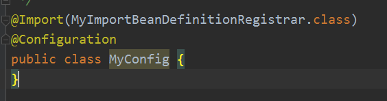
TestBean就是一个空的实现。
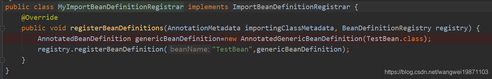
看加载
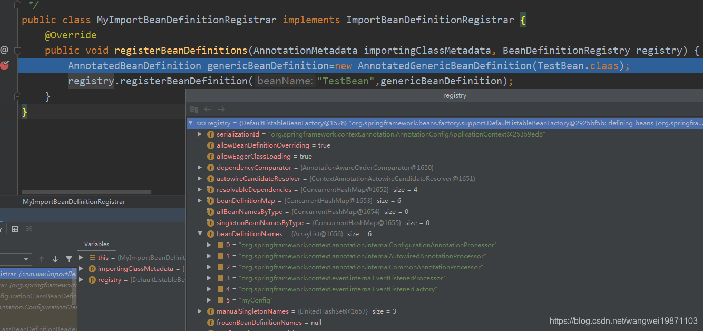
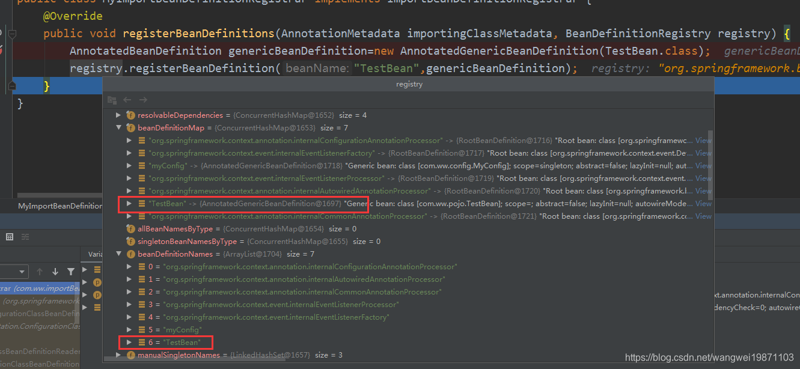
至此对配置类的bean定义加载完成。主要步骤就是如果是被import进来的，就把自己注册进去，如果有bean注解方法的，把bean注解的方法作为bean定义注册进去，然后处理xml里的bean定义和ImportBeanDefinitionRegistrar实现类的扩展bean定义。
创建了一个TestBeanDefinitionRegistryPostProcessorPriorityOrdered 实现了BeanDefinitionRegistryPostProcessor和Ordered 。
201public class TestBeanDefinitionRegistryPostProcessorPriorityOrdered implements BeanDefinitionRegistryPostProcessor, PriorityOrdered {2 public TestBeanDefinitionRegistryPostProcessorPriorityOrdered(){3 System.out.println("TestBeanDefinitionRegistryPostProcessorPriorityOrdered被创建了");4 }5
6 7 public void postProcessBeanDefinitionRegistry(BeanDefinitionRegistry registry) throws BeansException {8 System.out.println("MyBeanDefinitionRegistryPostProcessorPriorityOrdered postProcessBeanDefinitionRegistry");9 }10
11 12 public void postProcessBeanFactory(ConfigurableListableBeanFactory beanFactory) throws BeansException {13 System.out.println("MyBeanDefinitionRegistryPostProcessorPriorityOrdered postProcessBeanFactory");14 }15 //排序的值，越小越前面16 17 public int getOrder() {18 return 1;19 }20} 然后配置类里面用bean注解方法，直接返回这个实例类型，我这里为了方便，其实应该返回接口类型，另外写一个接口类型比较好的。
71public class MyConfig {3 4 public TestBeanDefinitionRegistryPostProcessorPriorityOrdered myRegistrar(){5 return new TestBeanDefinitionRegistryPostProcessorPriorityOrdered();6 }7} 执行的结果就是会被创建出来，然后执行postProcessBeanDefinitionRegistry方法：
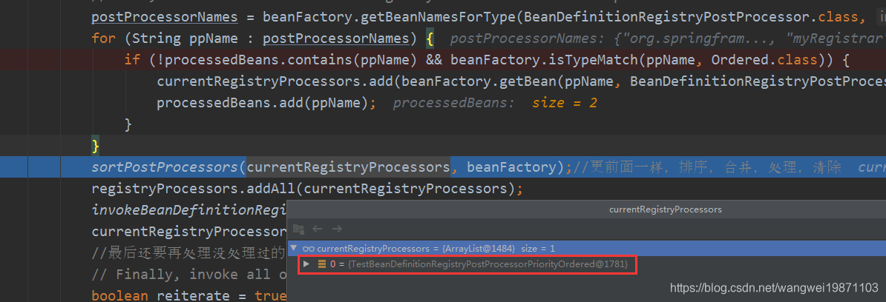
注意：这个时候因为要创建TestBeanDefinitionRegistryPostProcessorPriorityOrdered处理器，所以MyConfig也会被创建出来，作为单例。